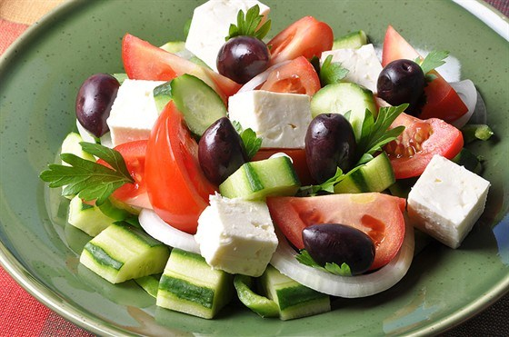

Гастрономическое путешествие по
Греции
Отдых каждый представляет по-своему: новые места, свежий воздух, море впечатлений, неспешные прогулки, сон вволю, вкусная еда. Ради этого многие отправляются на время отпуска в другие страны, ведь считается, что лучше всего можно отдохнуть, сменив обстановку. А чтобы ваш отдых стал еще и полезным для здоровья, большое внимание следует обратить на ваше отпускное меню. А где у нас самая здоровая еда? Конечно, в странах Средиземноморья, а особенно в Греции. Поэтому мы приглашаем вас в гастрономическое путешествие именно в эту страну.

Географическое расположение Греции
Географическое расположение Греции, а также ее климатические условия определили необычайно яркую местную кухню. На равнинах страны выращиваются в больших количествах самые сочные и полезные фрукты и овощи, а также известные всем оливковые деревья. Именно оливковое масло, полезность которого подтверждена уже давно, чаще всего добавляют в салаты и другие блюда. Да и свежие оливки пользуются заслуженной любовью местных жителей. .

Так как большая часть Греции омывается морем, это касается и материковой части, и многочисленных островов, то вы всегда можете насладиться свежей рыбой и блюдами из морепродуктов, богатых фосфором и легко усваиваемым белком. Именно греческая кухня легла в основу известной «средиземноморской диеты»: много свежих овощей, морепродукты, оливковое масло и красное вино. А если к этому прибавить еще свежий морской воздух, которым вы будете напитывать свой организм во время длинных и интересных прогулок, то можете быть уверены: во время отдыха в Греции вы приведете себя в идеальную физическую форму и, конечно же, отдохнете психологически от трудовых будней
Любимое блюдо в Греции
Благодаря плодородию почвы особой популярностью в греческом меню пользуются свежие овощи, особенно помидоры, бобовые, баклажаны и оливки. Кстати, именно оливки с баклажанами входят в состав одного из любимейших греками блюд – овощной запеканки мусаки
{kind=link}
Морепродукты Греции

На любом курорте, а особенно на греческих островах, вас обязательно угостят блюдами из свежих морепродуктов. Такого разнообразия даров моря вы не найдете больше нигде, поэтому не упускайте случая полакомиться осьминогами, мидиями, креветками, каракатицами, кальмарами и омарами, а также блюдами из непривычных для россиян видов рыб. Обязательно попробуйте блюдо из зажаренных в масле креветок, приправленных луком и шпинатом, а также зажаренного на углях осьминога.
Мясоедам
Мясоедам также придется по вкусу греческая кухня, ведь где еще вы сможете попробовать такие вкусные поидакью, мосхари лемонато, арнаки сувлас , а также многочисленные мясные закуски, сочные, пряные и ароматные, например, панцетес?
{kind=link}
{kind=link}
Арнаки сувлас
Арнаки сувлас расшифровывается как "барашек на вертеле". Из туши молодого барана удаляют внутренности, промывают и натирают перцем изнутри. Затем его продевают через вертел. Ноги, шею и хребет привязывают к вертелу, а живот зашивают. Барашка натирают соком лимона и специями, потом начинают вертеть – сперва быстро, а затем медленнее. Его нужно вращать, пока не прожарится внутренняя часть. Для насыщенности вкуса мясо во время жарки поливают маслом с лимонным соком.
{kind=link}
{kind=link}
Cыры Греции
Один из столпов греческой кухни – домашние сыры, особую популярность во всем мире завоевали фета и кефалотирти. Настоящие греческие сыры вы сможете попробовать в любом ресторанчике Греции.
Салаты Греции
Салаты из свежих овощей – еще одна вечная любовь греков. Наверное, все хоть раз в жизни пробовали или, как минимум, видели в меню отечественных заведений общественного питания салат под названием «Греческий». Будьте уверены, что этот салат, приготовленный по настоящему рецепту в самой Греции, разительно отличается от тех, который вам предложат в России или другой стране Европы. Кстати, греки называют его «Крестьянским» или «Деревенским» (Хориатики), потому что этот салат можно приготовить из овощей, выращенных на любом греческом деревенском огороде. Салат «Хориатики» очень простой по своему составу: крупно порезанные помидоры, огурцы, репчатый лук, сладкий перец, домашний овечий сыр фета, оливки – и все это заправить оливковым маслом, немного посолить и приправить душицей орегано.
Кроме «Греческого» салата, обязательно попробуйте и другие национальные блюда Эллады. «Пробежимся» коротко по некоторым из них:
Сувлаки
Это вид мясного шашлыка, приготовленного на деревянных шпажках. Готовится из нежирной свинины, баранины, курицы и даже рыбы. До жарки мясо маринуется в смеси оливкового масла и лимонного сока, приправленной перцем, душицей орегано и в меру посоленной. Есть два варианта подачи готового блюда. Первый способ: мясо прямо на шпажках поливают лимонным соком и подают с картофелем или белым хлебом. При втором способе снятое со шпажек мясо вместе с овощами, соусом и зеленью заворачивают в питу (греческая лепешка).
{kind=link}
Мусака
Знаменитая греческая слоеная запеканка из овощей и мяса. Нижний слой – баклажаны, к которым можно добавить картофель, кабачки и грибы по желанию. Средний слой – мясной фарш с помидорами. Верхний слой – соус бешамель или брынза. Готовая мусака нарезается порционными кусками, украшается зеленью и приправляется любимым соусом по вкусу.
Дзадзики
Вкуснейший греческий соус, приготовленный на основе йогурта из овечьего или козьего молока, свежих огурцов, чеснока и ароматных трав (укроп, петрушка, мята). Сверху готовый соус немного поливают оливковым маслом. Едят дзадзики и как самостоятельное блюдо, и в качестве соуса к рыбе, мясу, овощам, а также просто с хлебом.
{kind=link}
Бугаца
Слоеный греческий пирог с сыром или ванильным кремом, посыпанный сверху сахарной пудрой и молотой корицей. Особенно любят бугацу в северной части Греции, где ее традиционно едят на завтрак с кофе.
{kind=link}
Кофе Греции
Кстати, немного о кофе. Именно этот напиток является самым любимым у греков. А чай, наоборот, считается непрестижным напитком. Без кофе не обходится ни одна трапеза в греческой семье. Кофе пьют как в горячем, так и в холодном виде (фраппе). Иногда в кофе добавляют алкоголь, шоколад или мороженое. Обязательно попробуйте горячий кофе с добавленным в него местным анисовым ликером. Особенно вкусен такой кофе с национальными греческими сладостями – лукумом